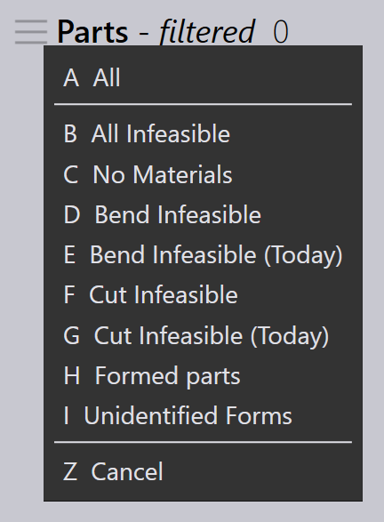

Salvar filtros
Filtros salvos permitem que você reutilize critérios frequentemente aplicados em Peças, Trabalhos e Layouts, otimizando seu fluxo de trabalho. Cada módulo vem com filtros padrão, mas listas de filtros adicionais podem ser criadas por Site Admins ou Programadores conforme necessário. Reutilizar filtros salvos economiza tempo e ajuda a manter consistência nas pesquisas.
-
Clique no ícone
 para visualizar os filtros padrão.
para visualizar os filtros padrão.
Etapas para salvar filtros
-
Clique no ícone
 , Selecione qualquer item de filtro.
, Selecione qualquer item de filtro.
-
No menu suspenso do item de filtro selecionado, escolha uma opção. Uma marca de verificação aparecerá ao lado da condição selecionada.

-
Para aplicar a condição, clique no ícone
e selecione
Add Condition Ctrl++. Você pode repetir esta
etapa para adicionar múltiplas condições.
-
Para salvar estes filtros selecionados com condições, clique em Save Filter… Ctrl+S.

-
Insira o nome e clique em Save.

-
No diálogo Save Filter, você também pode excluir quaisquer filtros salvos anteriormente.
-
Estes filtros serão salvos na lista de filtros Padrão. Aqui Material é salvo na lista padrão.

| Filtros criados por SiteAdmin e Admin são compartilhados com todos os usuários. Filtros criados por Programmer e Operator são compartilhados apenas com as funções de usuário Programmers e Operators. |
Comandos de filtro
| Comando | Ícone | Atalhos | Descrição |
|---|---|---|---|
Clear Selection |
|
Ctrl+X |
Desmarca todas as escolhas selecionadas e atualiza a visualização dos itens de filtro. |
Select Highlighted |
|
Ctrl+A |
Seleciona todas as escolhas destacadas. Este comando permanece desabilitado se o destaque de itens não for aplicável para o campo selecionado. |
Match All |
|
& |
Exibe apenas itens que atendem a todas as condições selecionadas. |
Pin In/Out Menu |
|
Ctrl+Down/Up |
Quando fixado, o menu suspenso permanece aberto mesmo quando o foco atual se move para outra janela. |
Close Menu |
|
Esc |
Fecha o menu suspenso. |